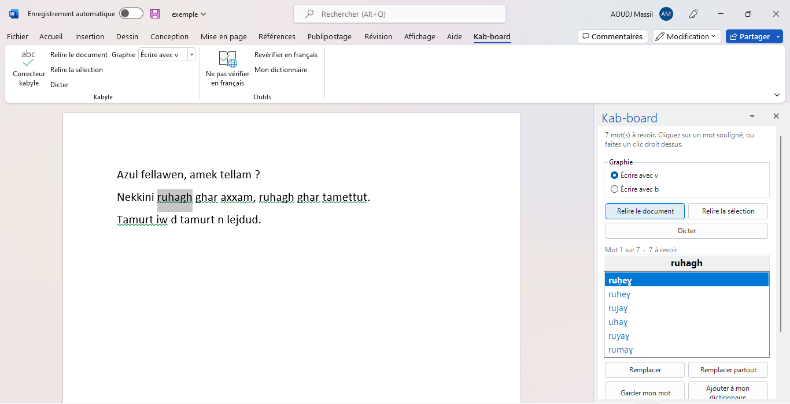
Kab-board, correcteur kabyle. Licence GNU GPL version 3 ou ultérieure. Le modèle de langue et le lexique sont publiés sous licence CC BY-SA 4.0, doi 10.5281/zenodo.22112059.
Il n'y a rien d'autre à installer. Le correcteur emporte tout avec lui : le lexique kabyle de 1,58 million de formes, le modèle de langue, le modèle de dictée, et le programme qui les fait tourner.
Word pour Mac, Word en ligne (dans le navigateur) et Word sur téléphone n'acceptent pas ce genre de complément.
Pas besoin d'être administrateur de l'ordinateur : Kab-board s'installe dans votre compte Windows, comme une application personnelle.
L'installeur est un seul fichier : kab-board-word-setup-0.3.exe (environ 250 Mo).
Double-cliquez sur le fichier.
L'installeur n'est pas signé numériquement, alors Windows peut afficher cet écran bleu la première fois. Cliquez sur Informations complémentaires, puis sur Exécuter quand même.
Une seule fenêtre s'ouvre. Cliquez sur Installer.
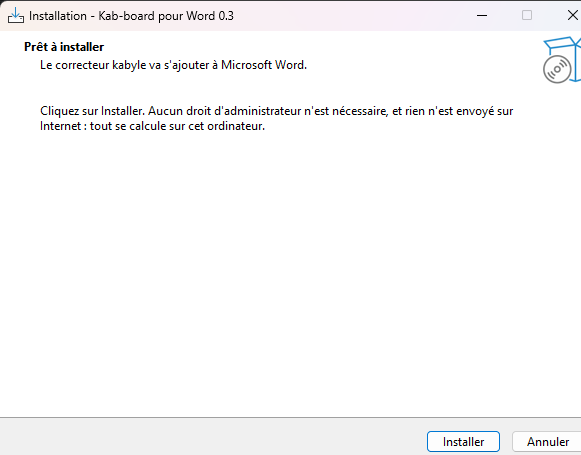
Si Word est ouvert, l'installeur propose de le fermer : enregistrez d'abord vos documents.
L'installation dure deux à trois minutes. À la fin, l'installeur affiche un moment « Préparation du correcteur… » : il prépare ce qui permettra à Word de démarrer le correcteur plus vite.
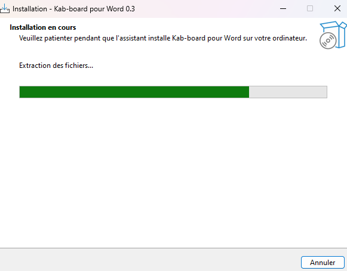
Cliquez sur Terminer. C'est installé.
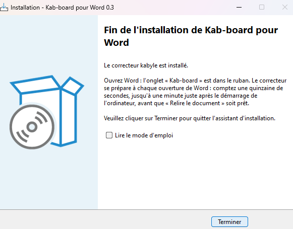
Pour passer à une nouvelle version, lancez simplement le nouvel installeur : il remplace l'ancienne version et garde votre dictionnaire et vos réglages.
Ouvrez Word. Un nouvel onglet Kab-board apparaît dans le ruban, à droite de « Aide ». Cliquez dessus :
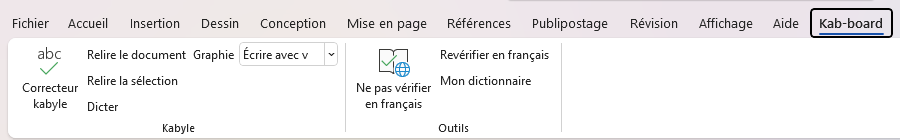
| Bouton | À quoi il sert |
|---|---|
| Correcteur kabyle | Ouvre ou ferme le volet Kab-board, à droite de la page. |
| Relire le document | Cherche les mots douteux dans tout le document (§ 7). |
| Relire la sélection | Seulement les paragraphes sélectionnés, ou celui du curseur (§ 12). |
| Dicter | Écrit au curseur ce que vous dites en kabyle (§ 14). |
| Graphie | Écrire avec v ou avec b (§ 4). |
| Ne pas vérifier en français | Enlève les vagues rouges du correcteur français (§ 5). |
| Revérifier en français | L'inverse, pour un passage en français. |
| Mon dictionnaire | Les mots que le correcteur ne doit plus signaler (§ 13). |
Le kabyle s'écrit de deux façons pour certains sons : avec v ou avec b. Choisissez la vôtre dans la liste Graphie du ruban :
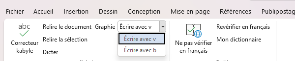
On peut aussi la choisir en haut du volet. Le choix est retenu d'une fois sur l'autre ; au départ, c'est « v ».
La graphie compte pour les corrections proposées et pour la dictée. Si vous la changez pendant une relecture, relancez Relire le document pour en tenir compte.
Word croit que votre texte kabyle est du français mal écrit, et le souligne de vagues rouges partout. Ces vagues cachent celles de Kab-board.
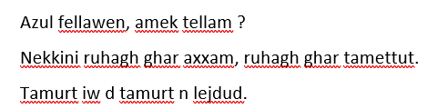
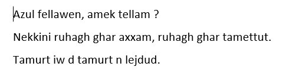
Ce réglage est enregistré avec le document. Le texte que vous tapez ensuite au même endroit en profite aussi. Pour un passage en français, sélectionnez-le et cliquez sur Revérifier en français.
Cliquez sur Correcteur kabyle. Le volet Kab-board s'ouvre à droite de la page :
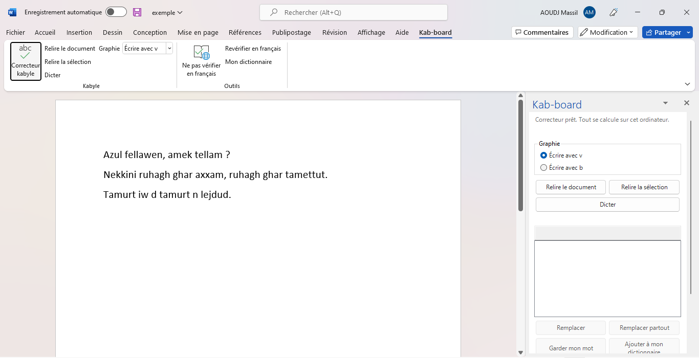
Le correcteur se prépare à chaque ouverture de Word : comptez une quinzaine de secondes, et jusqu'à une minute juste après avoir allumé l'ordinateur. Pendant ce temps, le volet affiche « Démarrage du correcteur… » et le bouton Relire le document reste grisé. Il s'active tout seul quand c'est prêt.
Le volet se ferme avec la croix en haut à droite, et se rouvre avec Correcteur kabyle.
Cliquez sur Relire le document, dans le ruban ou dans le volet. Sur un long document, le volet montre la progression (« Relecture : paragraphe 12 sur 80… »), et Annuler l'arrête.
Chaque mot douteux est souligné d'une vague de couleur :
Le volet indique où vous en êtes (« Mot 1 sur 7 · 7 à revoir »), le mot en question, et jusqu'à six propositions. La première, en gras, est la meilleure.
Le correcteur ne fait que proposer. C'est toujours vous qui choisissez.
Faites un clic droit sur un mot souligné. Ses propositions apparaissent en haut du menu habituel de Word. Cliquez sur la bonne :
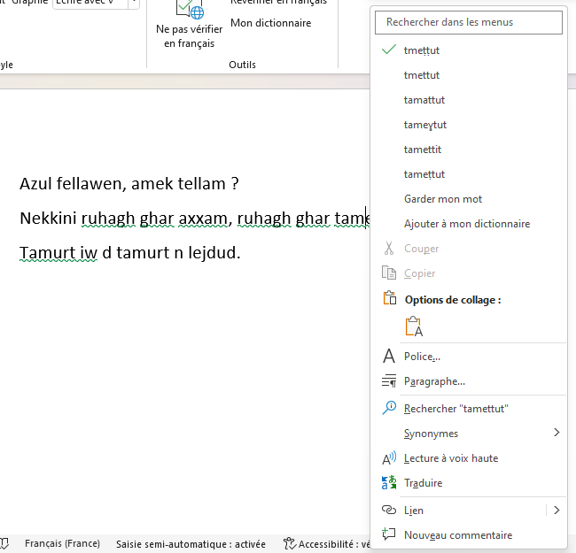
Cliquez sur un mot souligné dans le texte : le volet passe à ce mot, et votre curseur reste où vous avez cliqué. Choisissez une proposition dans la liste, puis :
| Bouton | Effet |
|---|---|
| Remplacer | Remplace le mot par la proposition choisie, et passe au mot suivant. Un double-clic sur la proposition fait pareil. |
| Remplacer partout | Remplace toutes les fois où ce même mot est signalé (§ 9). |
| Garder mon mot | Vous aviez raison : le mot reste tel quel, ici. |
| Ajouter à mon dictionnaire | Le mot est juste et ne doit plus jamais être signalé, dans aucun document (§ 13). |
Quand la même faute revient plusieurs fois, inutile de la corriger une à une. Choisissez la proposition, puis cliquez sur Remplacer partout :
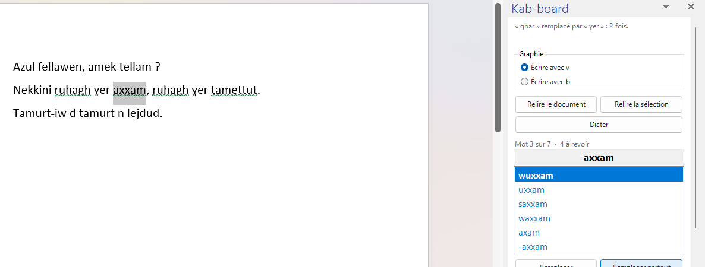
Seules les occurrences encore à revoir de ce mot exact sont remplacées. Un seul Ctrl+Z les remet toutes.
Les possessifs s'attachent au nom par un trait d'union. Quand vous les écrivez séparés, le correcteur souligne les deux mots ensemble et propose la forme rattachée :
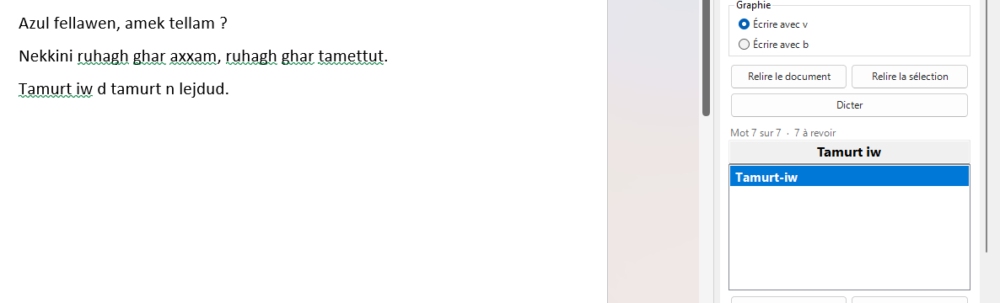
Remplacer remplace les deux mots d'un coup :
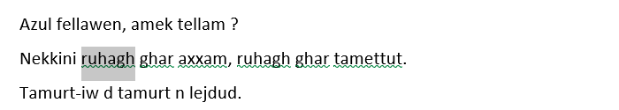
Le correcteur ne fusionne jamais deux mots séparés par une virgule.
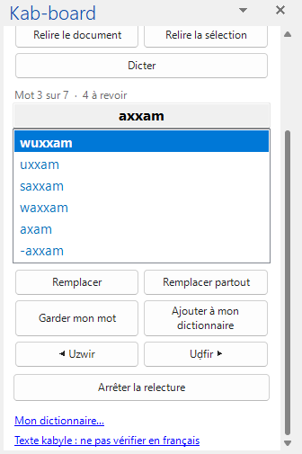
Sur un petit écran, faites défiler le volet pour voir ces boutons.
Quand tout est revu, le volet l'indique : « Tout est revu ».
Pour vérifier un passage sans relire tout le document :
Seuls ces paragraphes sont relus. Les soulignés déjà posés ailleurs restent en place. C'est pratique après avoir écrit ou dicté quelques phrases.
Un nom propre, un mot régional, un mot juste que le correcteur ne connaît pas : ajoutez-le à votre dictionnaire et il ne sera plus jamais signalé.
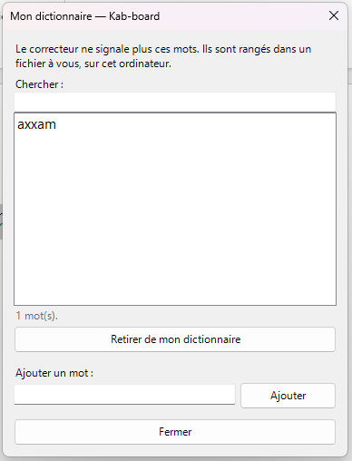
Dans cette fenêtre, vous pouvez :
Kab-board peut écrire ce que vous dites, avec le même modèle de dictée que l'application sur téléphone.
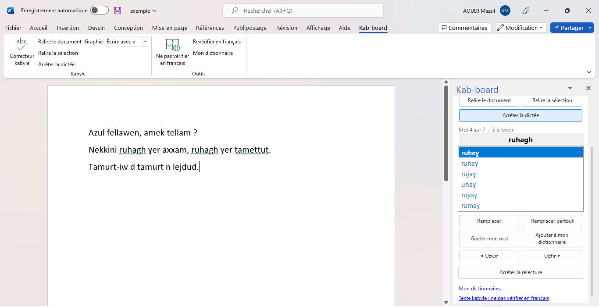
Après quelques secondes de transcription, le texte s'écrit au curseur, dans votre graphie (v ou b). Il reste sélectionné : cliquez sur Relire la sélection pour le vérifier. La dictée n'est jamais corrigée d'office.
Windows doit autoriser les applications de bureau à utiliser le micro : Paramètres › Confidentialité et sécurité › Microphone, puis activez « Autoriser les applications de bureau à accéder à votre microphone ».
L'enregistrement de votre voix reste sur l'ordinateur et il est effacé dès que le texte est écrit.
Avec l'enregistrement automatique de OneDrive, Word enregistre en continu, sans prévenir Kab-board. Cliquez sur Arrêter la relecture avant de partager un document.
Rien ne quitte votre ordinateur. Le correcteur et la dictée tournent entièrement sur votre machine. Ils ne se connectent à aucun service sur Internet.
| Quoi | Où |
|---|---|
| Le programme | %LOCALAPPDATA%\Programs\Kab-board |
| Votre dictionnaire | %LOCALAPPDATA%\kab-board\mots-a-moi.txt (un mot par ligne) |
| Le journal des incidents | %LOCALAPPDATA%\kab-board\pont.log |
| Votre graphie | dans le registre de Windows, à votre nom |
Pour ouvrir un de ces dossiers, tapez son chemin dans la barre d'adresse de l'Explorateur de fichiers.
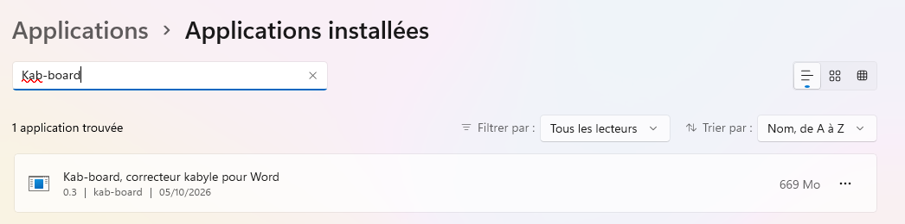
Votre dictionnaire est gardé, au cas où vous réinstalleriez. Pour l'effacer aussi, supprimez le dossier %LOCALAPPDATA%\kab-board.
| Ce qui se passe | Que faire |
|---|---|
| L'onglet Kab-board n'apparaît pas | Fermez et rouvrez Word. Sinon : Fichier › Options › Compléments, en bas « Gérer : Compléments COM » › Atteindre, et cochez « Kab-board ». Regardez aussi « Éléments désactivés » dans la même liste. |
| « Relire » reste grisé | Le correcteur démarre encore : attendez que le volet affiche « Correcteur prêt ». Juste après avoir allumé l'ordinateur, cela peut prendre une minute. |
| « Le correcteur s'est arrêté : il redémarre… » | Rien à faire : il repart tout seul. Si une relecture était en cours, elle reprend. |
| « Le correcteur n'a pas pu démarrer » | Fermez Word et rouvrez-le. Si cela continue, réinstallez Kab-board. |
| « Dicter » est grisé | Attendez « Correcteur prêt ». Le bouton est aussi grisé pendant une relecture. |
| « Rien n'a été reconnu » | Parlez plus près du micro, et vérifiez l'autorisation du micro (§ 14). |
| Un mot juste est signalé | Ajouter à mon dictionnaire. |
Pour signaler un problème : github.com/ADJ-MSS/kab-board. Joignez si possible le journal %LOCALAPPDATA%\kab-board\pont.log.